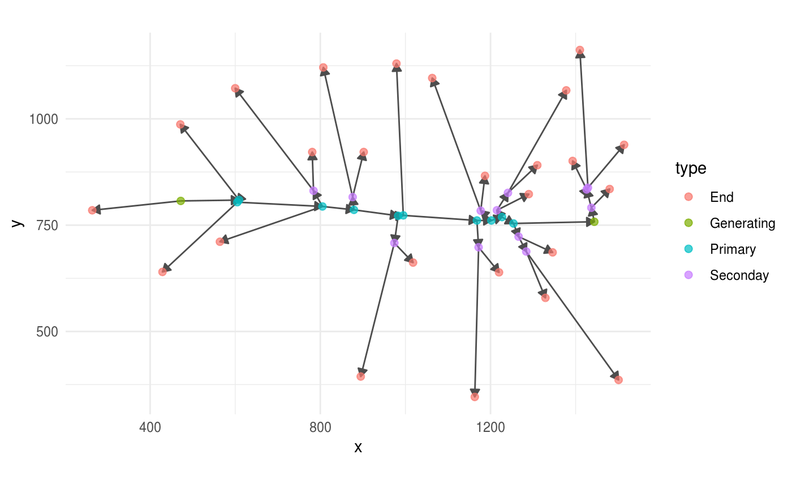

01 - Load Panicles into R
Otho Mantegazza
2018-12-04
load_files.RmdSetup
library(ptrapr)
library(ggraph)
library(magrittr)
library(igraph)
# library(tibble)
library(dplyr)
# library(tidygraph)
# ggplot2 theme minimal fits better with graphs
theme_set(theme_minimal())Read Panicle XML files
The software ptrap scans pictures of rice panicles and outputs their architecture in two XML files:
- A structure file:
- One file, with extension
.ricepr, stores the xy coordinates of each element of a panicle besides spikelets/grains. This file also stores the topology of those panicle elements in a directed graph. - A grain file:
- A second file, with extension
.ricegr, store the xy coordinates of each spikelet.
We have included examples of such files in this package. You can access these examples **online* here or locally in the ptrapr/extdata folder 1
Read Panicle Structure with read_panicle()
The structure and topology of the panicle is stored in the .ricepr XML file.
You can test the read_panicle() function on one of the .ricepr files included in this package.
path <- system.file("extdata/1_1_6307.ricepr",
package = "ptrapr")
panicle <-
path %>%
read_panicle()We suggest that you visualize the panicle that you have loaded into R using the package ggraph.
With a visual representation of the panicle graph, you can detect if that the XML files were parsed correctly.
For example:
panicle %>%
ggraph() +
geom_edge_link(arrow = grid::arrow(length = unit(0.08,
"inches"),
type = "closed"),
colour = "grey30") +
geom_node_point(aes(colour = type),
size = 2,
alpha =.7) +
coord_fixed()
#> Using `nicely` as default layout
Read Grain Coordinates with read_grains()
Likewise, we provide a sample .ricegr file. This file stores coordinates for all the grains on the panicle, but no structual / topological information.
grain_path <- system.file("extdata/1_1_6307.ricegr",
package = "ptrapr")
grains <-
grain_path %>%
read_grains()The function read_grains() parses and loads .ricegr files into R, but leaves us the challenge to integrate those points into the panicle graph. This is how they appear.
ggplot(grains,
aes(x = x,
y = y)) +
geom_point() +
coord_fixed()
Merge Grains into the Panicle Graph with add_all_grains()
Including grains into the panicle graph is a non trivial task with no perfect solution. We had best results by assigning the grain to the closest bracnh and by splitting the brach on the grain itself, creating a new intermediate node.
You can do this with the function add_all_grains().
full_panicle <-
panicle %>%
add_all_grains(grains)For example, this is how the panicle graphs and the grains look before adding the grains. As you can see, the grains are detached from the main panicle graph.
panicle %>%
ggraph() +
geom_edge_link(arrow = grid::arrow(length = unit(0.08,
"inches"),
type = "closed"),
colour = "grey30") +
geom_node_point(aes(colour = type),
size = 2,
alpha =.7) +
geom_point(data = grains,
aes(x = x, y = y)) +
coord_fixed()
#> Using `nicely` as default layout
And this is how it looks after adding the grains.
full_panicle %>%
ggraph() +
geom_edge_link(arrow = grid::arrow(length = unit(0.08,
"inches"),
type = "closed"),
colour = "grey30") +
geom_node_point(aes(colour = type),
size = 2,
alpha =.7) +
coord_fixed()
#> Using `nicely` as default layout
Locate your local package folder with the function::
find.package("ptrapr")↩